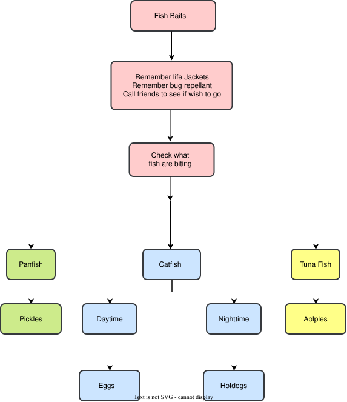

Mind Mapping
A mind map is a way of visually organizing complex information around a single main topic at the center of a page with braches of related main information branching out radially. Addition sub-braches off the main branches can be added to provide more detail. Keywords, images and colors can be used to enforce relationships and improve visual improve memory retention. A mind map is often not too far removed from a algorithm in structure but many times can be used to simplify and organize the information in a algorithm in an easier to remember format. The primary purpose of using mind mapping for the Fish Baits algorithmis simplying the algorhithm and often improving memory retention of the algorithm shape. If a mind map is not adequate for memory retention of the algoithm shape that is where the Method of Loci discussed later can be used.
Mind mapping is not always needed. Mind mapping is not needed when memorizing simple information such as shopping list. Many people with experience using memory system techniques when memorizing complex information simplify information instinctly and never make a mind map. There is a lot of intersting sites on the internet on mind mapping.
AD
AD
Fish Baits Algorithm
The Fish Baits algorithm as follows:

AD
AD
Fish Baits Mind Map
The Fish Baits algorithm is fairly simple but still has 12 seperate steps (boxes) each containing information. It would be helpful if these could be simplified and condensed so I will convert the algorithm to a Mind Map.
There are several possible ways to mind map the algorithm. Every person will have their own approach to simplifying it. One possible way is as follows:

The main topic of the mind map will be called "Fish Baits" and will be placed in the center of the page. "Fish Baits"" information will include the information in the first three boxes of the algorithm to condense and simply the algorithm:
The three main branches of the mind map will be:
- Panfish
- Catfish
- Tuna
The "Catfish" branch will have two secondary branches.
- Daytime
- Nighttime
Again the primary purpose of the mind map has been simplying the algorhithm and improving memory retention of the algorithm shape. If a mind map is not adequate for memory retention of the algoithm shape the "Method of Loci" can be implemented as discussed later.
AD
AD